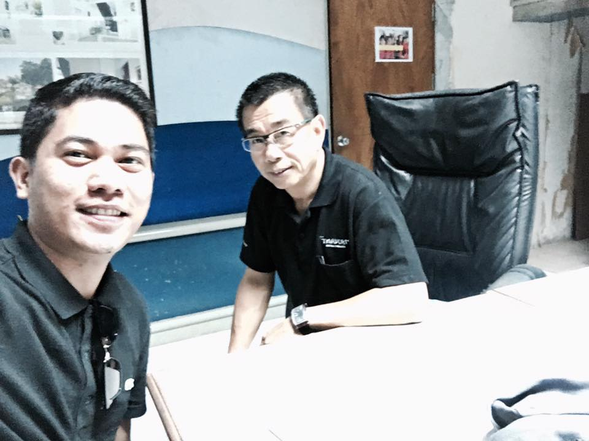

This is my Story
I am the fourth child of Mr. Ernesto and Mrs. Lolita Banadero. It was a sequential birth of girl-boy-girl-boy-boy. I
grew up in a simple way of living. My dad used to be a government employee and a tricycle driver during weekends. He is my idol. His salary alone was not enough to sustain all the needs of the family, that is why, he needed to strive harder.
Now, he is retired and spends time with my mom.
Sunday pictorial with mom
Elementary class batch 1994
I went to Punta Elementary School just like my sisters and brothers (Refer photo at the right). Then I went to Lallo National High School - Maura Annex which is now called Aparri East National High School and received an award "Artist of the Year" during graduation. (Sorry, no available photos during my high school because it was all destroyed by typhoons)
After finishing high school in 2004, I had to stop schooling because we were financially hard-up and to let my sister finish first. So, I concentrated on my hobby--painting and
drawing. I accepted projects from my neighbors and got some referrals, too. Also, I sold stone paintings during fiestas
and other special occasions.
In 2006, I went on to pursue a college degree—nursing—at the Medical Colleges of Northern Philippines, Tuguegarao City,
Cagayan. My eldest sibling was the one who took care of all the expenses. Unfortunately, after my second year, I had to
stop. But, one of my classmates suggested that we apply at Jollibee as service crew. Luckily, I landed a job as part of
the dining staff. There, I learned how to work in a fast-paced environment and practice discipline, too.
I needed to go back to my province because I was not able to afford the things I needed to survive in Tuguegarao City. And
luckily that time, Jollibee Aparri was opened. Thankfully, I was hired (counter/dining) in Joliibee Aparri. It was
always happy working in the company as I learned new things and made new friends.
Soon I had to leave the company because I was elected president of out-of-school-youth (OSY) in our municipality and had
the chance to compete with the entire district of Cagayan until I got the chance to be OSY president of the entire
Region 2. During my term as OSY president, I was able to attend different conventions and seminars as well as meet all
the other presidents of different Regions of the Philippines. During this time, I was also able to work in the Municipal
Social Workers and Development in Aparri as a National Service Volunteer from November 2009 to January of 2011.
It was a very fulfilling and memorable chapter in my life.(Below are some of the best shots during my PYAP days).
Cebu National PYAP Convention
Davao National PYAP Convention
Courtesy call of the PYAP National in DSWD Region XI
Samar National PYAP Convention
In 2010, I was already back in College, taking up Hospitality Industry Management. I joined student organizations like the Campus Student Government (CSG). What’s more, I was able to put up my college organization called the Junior Society of Hospitality IndustryManagement (JSHIM). Here, I was also given the chance to compete with other campuses. I participated in the Uniwide
Skills Olympics such as fruit and vegetable carving as well as food photography. My love for arts was applied in this field.
CSG Members together with the adviser during the blessing of the CHIM Sky Pavillion
Painting Santa display on CHIM Christmas celebration
Conducted an extra-curricular activity for JSHIM Organization
Competed on fruit and vegetable carving and bag the first place.
Competed on for food potography and bag the first place.
Pictorial with the certificates and awards
In April 2014, I received my diploma in Hospitality Industry Management. I was also the recipient of the Academic
Distinction and Leadership of the Year awards.
Receiving of award on Parents Night
Receiving of award on Parents Night
Proud Mom and Dad on my Graduation Day
Medals and certificates received during graduation
After graduation, I had the chance to work in government and non-government institutions here and abroad, where I was able to apply everything I have learned in college. I took on many responsibilities, which made me really good at customer service,
marketing, people management, sales services, monitoring stock movements, quality control, and visual merchandising. The
positions I held in my past jobs honed my skills and, at the same time, allowed me to experience working in a
professional and fast-paced work environment wherein I was trained in different work areas like:
1. Customer Service: face-to-face customer service environment, providing customer service at registers, lay-by counter,
and at the shops.
2. People management: Coordinator/team leader for students/interns in different hotels in Thailand.
3. Sales and Marketing specialist: Worked as a member of the marketing team.
4. Administrative tasks: Monitoring stock movements through broken-line, ordering and re-ordering of stocks, and visual
merchandising in all our shops which would be disseminated to all the staff, as well as partners of the company through
e-mail.
Below are the snapshots of the jobs I have:
OJT as a Marketing staff in J8 travel and tours
Lecturer at the Cagayan State University - Sanchez Mira
With my advisory class Section 2-D
Banquet waiter at Crowne Plaza Hotel
Helper Cook at Violet Restaurant in Uniazah, Saudi Arabia
Meeting with the General Manager of one of the Hotels in Krabi, Thailand
Meeting with the General Manager of one of the Hotels in Krabi, Thailand
Meeting with the Hotel Managers of Peace Laguna Resort and Spa in Krabi, Thailand

Meeting with the General Manager of one of the Hotels in Phuket, Thailand
Guest Relations officer at the Village Coconut Island, Phuket, Thailand
69 Slam Thailand - Meeting with the big bosses in Bali, Indonesia
69 Slam Thailand - Conduct meeting with the Shop Managers
69 Slam Thailand - Shift Manager at Patong 2 shop
69 Slam Thailand - Shift Manager at Laguna shop
69 Slam Thailand - Shift Manager at Karon shop
I am truly grateful that my teachers and employers have commended me for my exceptional interpersonal skills and happy
disposition in life.
At present, I am managing a small business together with a business partner here in the Philippines. We put-up a physical store but were
affected by the pandemic, so we decided to close it. We are now doing e-commerce.
If I would be given the opportunity to work in your company, you can expect that I can bring on the table all the
knowledge from my previous jobs. Aside from hard work and willingness to learn new things, your company can expect my
honesty and loyalty. And soon, I wish to be part of the company on a more permanent basis.